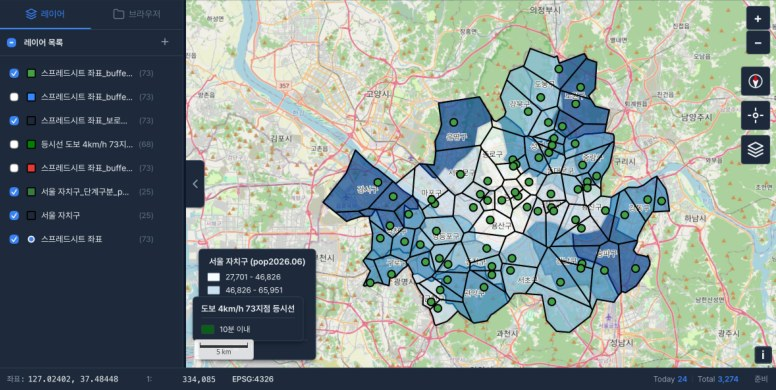
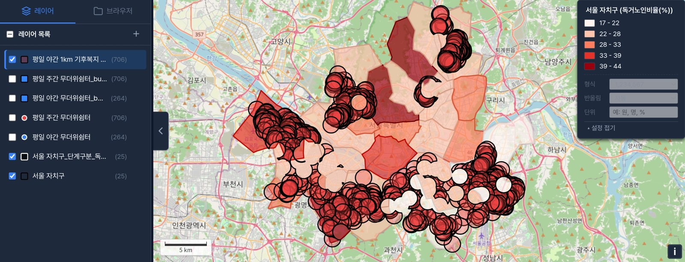
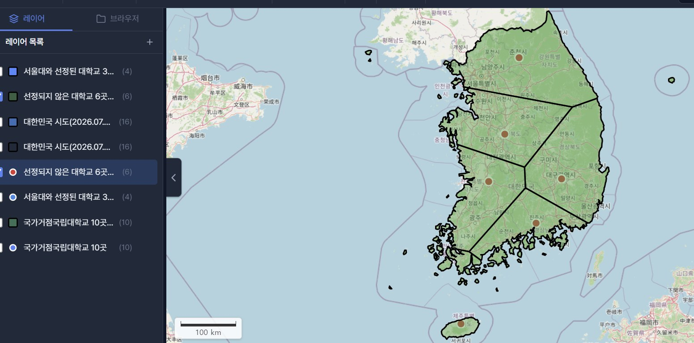
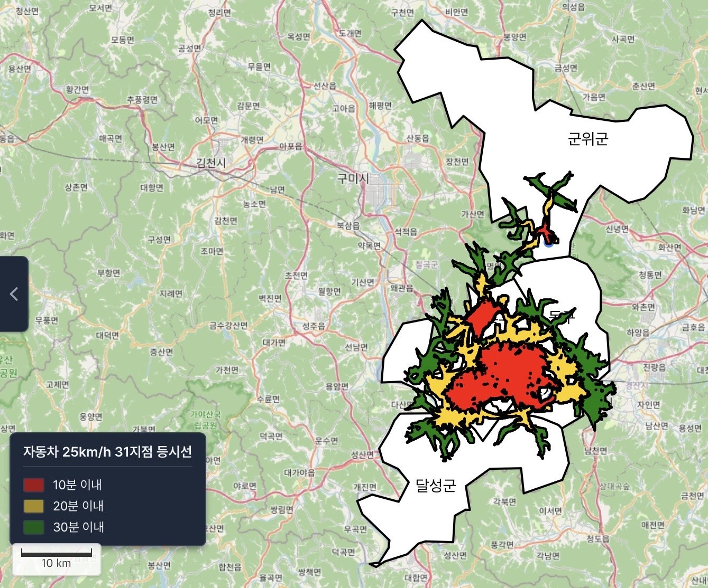
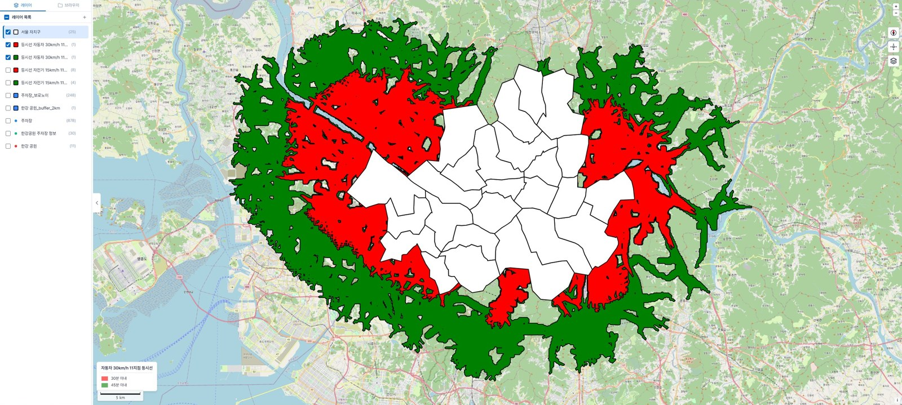
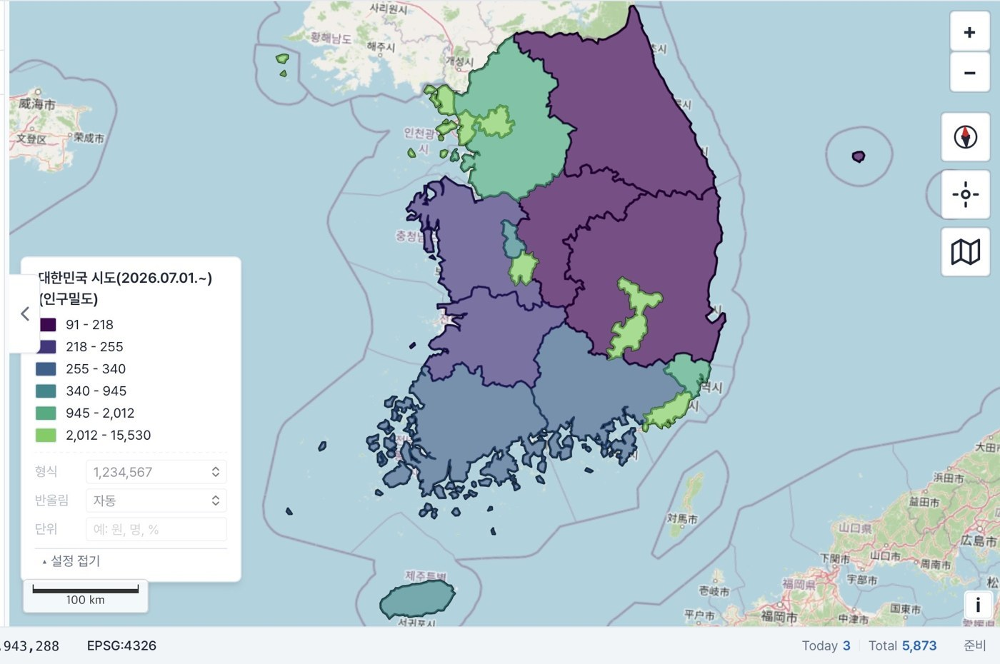
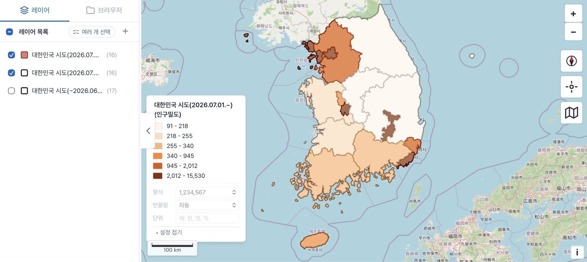
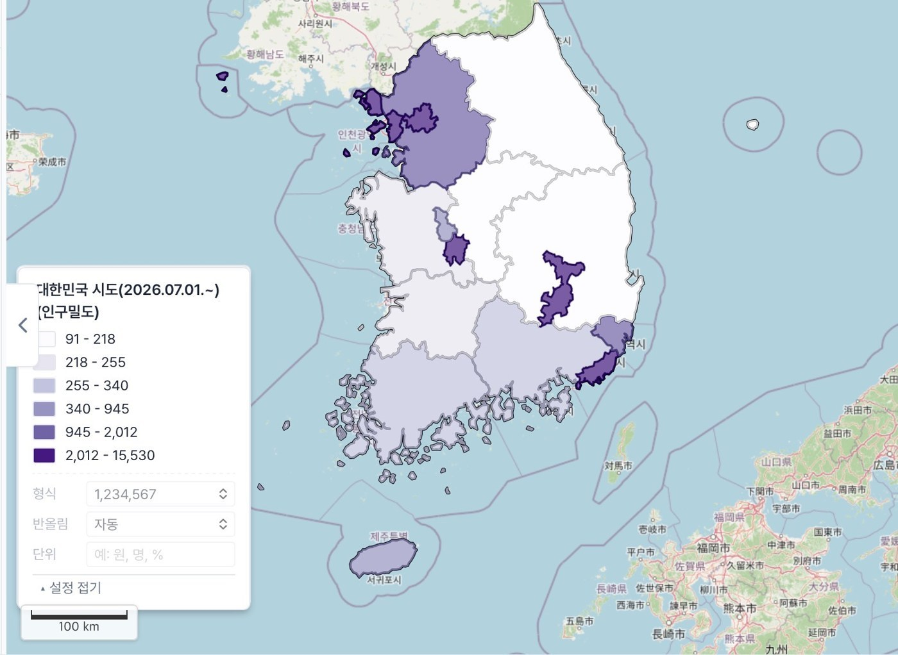
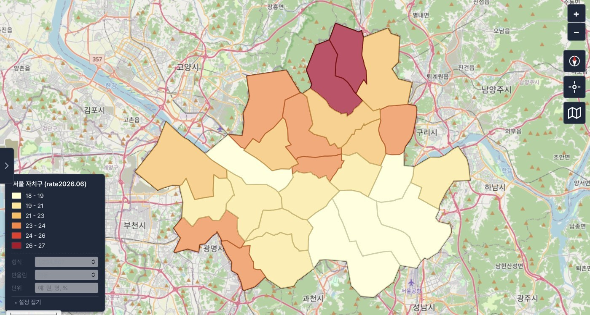
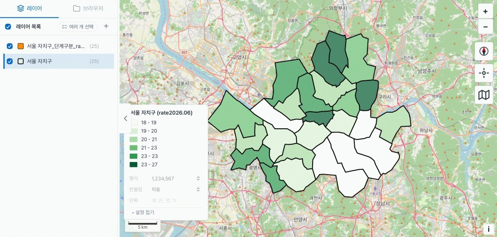

2026.11.28.(토)
생성형 AI를 활용한
교육용 웹 GIS 개발과
고등학교 신설 과목 적용
김용현
서울대학교 지리교육과 석사과정
한국지리학회 발표
충북대학교
효과는 알지만
교실에서는
어려운 GIS
하드웨어
컴퓨터실 확보, 사양
소프트웨어
설치, 라이선스, 낯선 화면
데이터
수업에 맞는 공간 자료 찾기와 가공
현실
프로그램 실습보다
문헌 학습에 머무는 GIS 교육
출처: 하은혜, 이채현, 조철기 (2022), 한국지역지리학회지 28(3)
교사가 직접 만든 웹 GIS
바이브 코딩: 자연어로 지시하고 AI가 코드 작성 (Collins 2025 올해의 단어)
수업 요구필요한 기능 떠올리기
자연어 설명
Claude Code코드 작성과 수정
배포
수업 적용교실에서 시험
되돌림
다시 고치기2025.12.21~ 현재 반복
출처: Clark, L. (2025), The Register
e-GIS 특징
01설치 없음웹 브라우저로 바로 실행
별도 백엔드 서버 없음
GitHub 저장 자료 불러오기
02태블릿 최적화일반 교실, 개인 태블릿
터치 조작 기준 설계
서울 1인 1태블릿 환경
03전문가용 화면QGIS, ArcGIS와 닮은 구성
기능은 단순하게
전문 프로그램으로 이행
04쉬운 자료 투입미리 탑재한 수업 자료
구글 시트 링크 연동
속성, 좌표 자료
두 학교 수행평가 적용
학교일반 사립고 (남고)
자율형 사립고 (남고)
과목2학년 「한국지리 탐구」
2학년 「도시의 미래 탐구」
과제공간적 의사결정 지도 제작
단계 구분도 제작
배점30점 (실험 실습 22, 서논술 8)
20점 (GIS 활용 문제 탐구)
출처: 두 학교 2026학년도 2학기 평가 계획, 학생 산출물
공간적 의사결정 지도 제작하기
GIS 기능 실습 10점
지오코딩
결합 (join)
점묘도
등고선 지도
핫스팟 분석
단계 구분도
카토그램
등시선도
개별 GIS 탐구 12점 + 보고서 8점
자료 취득
탐구에 맞는 공간 자료 직접 찾기
자료 가공
정제, 지오코딩, 결합
공간 분석
서로 다른 기능 2개 이상 연계
보고서
과정, 해석, 결론과 시사점
출처: D 고등학교 2026학년도 2학기 한국지리 탐구 평가 계획
학생이 고른 탐구 주제
발견
우리 동네 시설의
접근성과 사각지대
서울 대상 58편 (77%), 접근성, 사각지대, 격차를 다룬 탐구 42편 (56%)
자료: D 고 학생 보고서 75편 전수 분석, 주제 분류는 발표자
D 고 우수 사례

D-1인구 밀집과 체육센터
서비스권 불일치보로노이, 공간 연산, 등시선, 결합보로노이를 자치구로 잘라 인구와 결합

D-2무더위쉼터
야간 기후 복지 사각지대버퍼, 공간 연산, 단계 구분도주간과 야간 쉼터 버퍼 차이, 독거노인 비율과 중첩

D-3서울대 10개 만들기
다음 지원 대학 선정보로노이, 버퍼, 지오코딩, 결합국가거점국립대 권역과 산업단지로 본 국토 균형
학생 산출물, 개인 정보 가림
D 고 우수 사례

D-4소멸 위험 지역 군위군의 문화 시설 접근성등시선, 공간 연산, 결합소멸위험지수 단계 구분도와 미술관 10, 20, 30분 등시선

D-5한강공원 광역 접근성보로노이, 버퍼, 등시선주차장 보로노이, 자동차와 자전거 등시선, 서울 밖까지 닿는 영향권
학생 산출물, 개인 정보 가림
단계 구분도 제작
2-9반 (36명)
1시도별 인구 밀도
22026.07.01 경계전남광주통합특별시 반영
3자연 구분점, 6단계
2-12반 (37명)
1서울 자치구별 고령 인구 비율
22026.06 자료 결합
36단계, 색 자유
평가 요소: 레이어 생성, 자료 결합 등 GIS 도구를 오류 없이 다루어 분석 기반 만들기
출처: Y 고등학교 도시의 미래 탐구 평가 계획, 과제 안내, 학생 산출물
Y 고 전체 분석
2-12반 6단계78%서울 자치구 지도 35명 중 29명
기본 파랑 그대로67%색은 자유였지만 73명 중 49명
자료: Y 고 학생 제출 캡처 73명 전수 분석
Y 고 우수 사례 시도 인구 밀도

Y-1순차 색 팔레트보라에서 초록, 낮은 값과 높은 값이 뚜렷

Y-2경계 시점 확인이전 경계 레이어는 끄고 2026.07 경계만 사용

Y-3단색 명도 단계보라 6단계, 범례와 지도가 함께 읽힘
학생 산출물, 개인 정보 가림
Y 고 우수 사례 서울 고령 인구 비율

Y-4노랑에서 빨강강북, 도봉의 높은 고령 인구 비율이 한눈에

Y-5레이어와 범례 함께결합한 레이어와 원래 경계 레이어를 나란히 관리
학생 산출물, 개인 정보 가림
시사점과 남은 과제
확인한 것
일반 교실, 태블릿으로 GIS 수행평가
지도로 문제를 보고 대안 제시
기본 기능 숙달에 드는 시간
평가 요소에 기능 항목 추가
남은 과제
접속, 실행, 초기 안내 시간 조사
과목별 과제 예시와 출처 분명한 자료
평가 기준 개발
서울 사립 남고 너머 다양한 표본
감사합니다.
김용현 | 서울대학교 지리교육과 | e-gis.kr